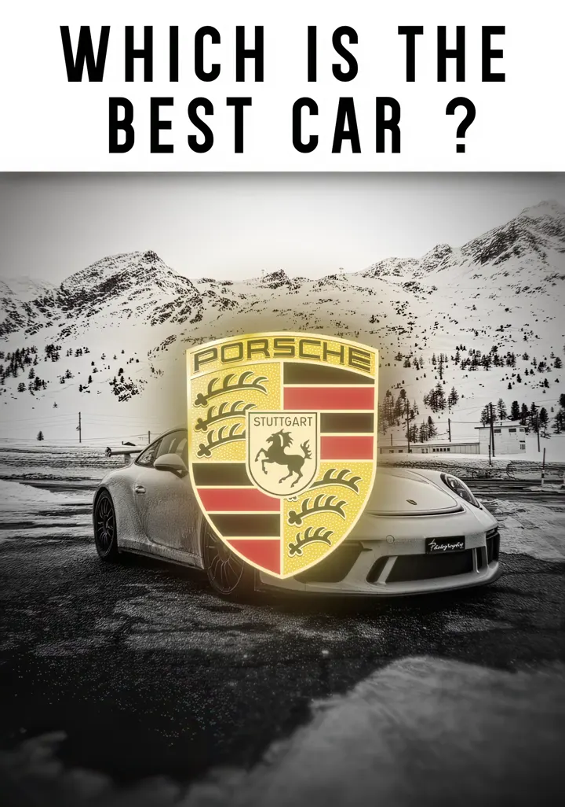

Disponible pour un stage
Des images
qui racontent.
Je suis Ylan Vastra, éditeur TikTok et créateur vidéo. Je réalise des contenus courts et maîtrise le motion design et le compositing.
Édition TikTok · Contenus courts · Motion design

PortfolioImage en mouvement 01 — 17 Faire défilerSélection personnelle
Projets choisis.
Du premier cut au dernier détail,
chaque image a son intention.
Un peu de contexte
YV.Créer, assembler,
faire ressentir.
Éditeur TikTok, je conçois des contenus courts qui accrochent dès les premières secondes. Je maîtrise le montage, le motion design et le compositing, avec une attention particulière au rythme, au son et à la narration visuelle.
Je suis actuellement à la recherche d’un stage où contribuer à des projets créatifs, apprendre au contact d’une équipe et continuer à affiner mon regard.
Édition TikTokContenus courtsMotion designSound designCompositing